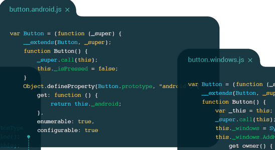
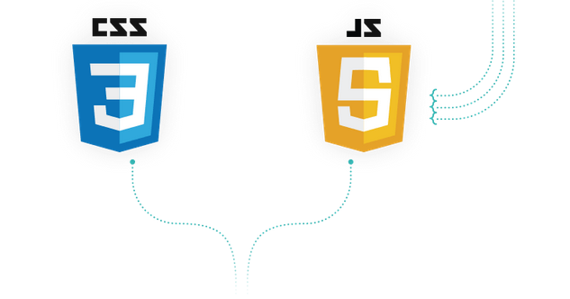

NativeScript ile Mobil Uygulama Geliştirme
Javascript ve CSS artık günümüzün vazgeçilmezleri arasında. Özellikle HTML5, CSS3 ve JavaScript ve V8 engine ile birlikte aşırı popüler olan bu diller tahmin edildiği gibi mobil dünyanın da vazgeçilmezleri.
Özellikle büyük şirketler masaüstü platformlarını mobile de taşımakta kararlı durumdalar. Bunun için de mevcut platformlar yani iOS, Android ve Windows Phone için ayrı ayrı yazılımcılar aramaktalar. Eğer şansları varsa tek yazılımcı her platformda aynı nitelikte geliştirme yapabilir. Günümüzün en büyük ihtiyacı cross-platform geliştirme yapılabilmesi.
NativeScript ise tam bu işi yapmak için var. Kendo UI'ın yapımcısı Telerik tarafından ortaya çıkarılmıştır.
Benzerlerinin aksine NativeScript'i farklı kılan ise direkt donanım ile konuşabilmesi. Yani tarayıcının render mekanizması yerine cihazın donanımı ile direkt konuşmakta. NativeScript ile tek bir code base üzerinde cross-platform mobil uygulamalar geliştirebilirsiniz.
Neden NativeScript?
NativeScript açık kaynak kodlu ücretsiz bir projedir. GitHub üzerinde herkes tarafından kullanılabilir yani katkı yapılabilir demektir.
NativeScript kolaydır. Kodları JavaScript, tasarımı CSS ile yapabilirsiniz. NativeScript ile gerçek bir kullanıcı deneyimi oluşturabilirsiniz.
NativeScript güçlüdür. Cross-Platform arayüzü kullanılabilir. Ortak iş mantığı ve veri modellerini destekler. Üçüncü parti native kütüphaneleri destekler.
NativeScript, Native Platform API'ının tamamına erişimi destekler. Tüm platform işlevselliği JavaScript katmanında mevcuttur.

Standartlara dayalı ECMAScript5 + JavaScript ve CSS

Roket bilimcisi olmanıza gerek yok. Var olan becerilerinizi kullanarak da uygulamalar geliştirebilirsiniz.
%100 Paylaşılan Kod
Tekrar söylemek gerekirse tek bir code base üzerinden cross-platform mobil uygulamalar geliştirebilirsiniz.

Yakın Zamanda Başlayın
NativeScript cli kurulumunu npm üzerinden yapabilirsiniz. Kurulum için:
npm install -g nativescript
Komutunu girerek nativescript'i bilgisayarınıza kurun. Yeni bir proje oluşturmak için
tns create MyApp
komutunu girerek MyApp adında bir uygulama gelişirmeye başlayabilirsiniz. Projenizi bir platforma göre ayarlamak çok basit. Bunun için şu komutu girebilirsiniz:
tns platform add android ya da tns platform add ios
Projenizi favori IDE ya da editörünüzde istediğiniz donanıma bağlı olarak geliştirin. Projenizi platform üzerinde çalıştırmak için şu komutu girin:
tns run android ya da tns run ios ayrıca projenizi emulator üzerinde çalıştırabilirsiniz. Bunun için şu komutu girin:
tns run android --emulator ya da tns run ios --emulator
Daha fazlasını yapmanızı ne engelleyebilir ki? Eğer aklınızda mobil proje varsa hemen şimdi NativeScript'e göz atabilir ve belki de hayalinizdeki projeyi NativeScript ile geliştirebilirsiniz.
NativeScript: https://www.nativescript.org/
NativeScript ile Yapılmış Bazı Örnekler: https://www.nativescript.org/showcases
NativeScript'e Başlarken: http://docs.nativescript.org/getting-started
NativeScript Dökümantasyonu: http://docs.nativescript.org/
NativeScript GitHub Sayfası: https://github.com/NativeScript/NativeScript
Yorumlar
Comments powered by Disqus